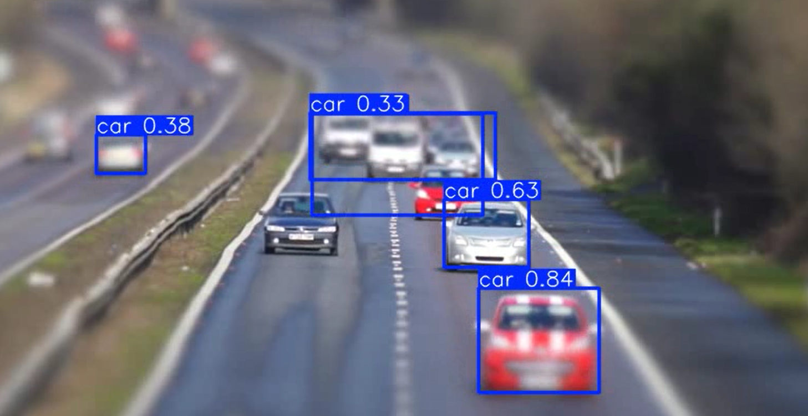
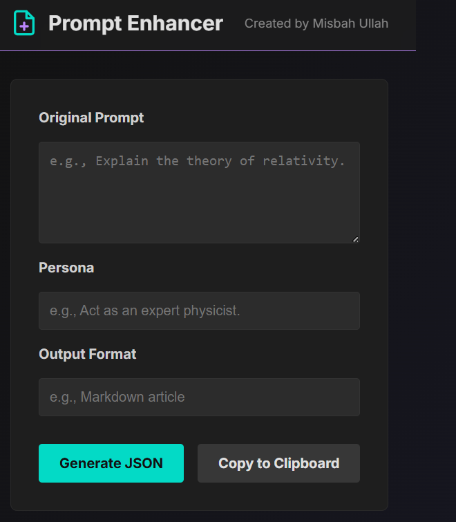
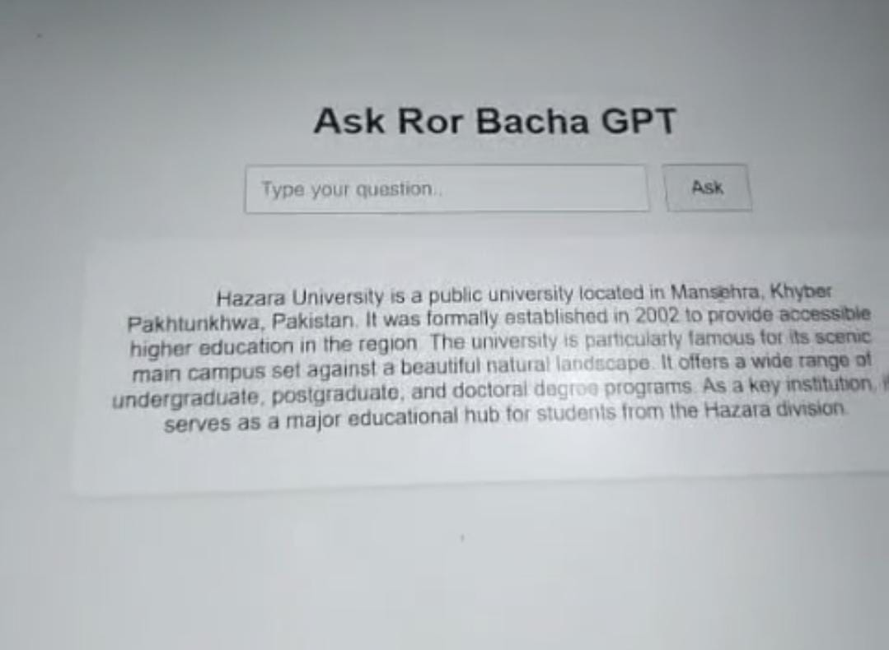
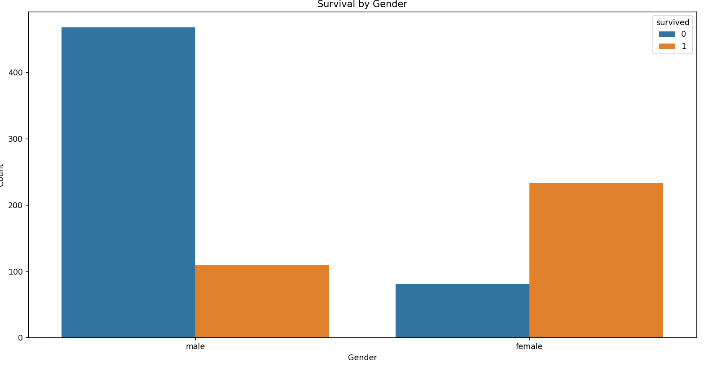
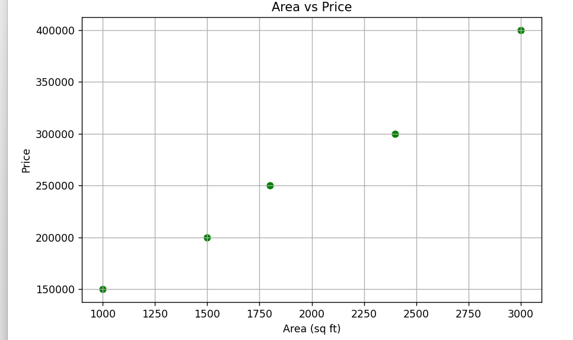
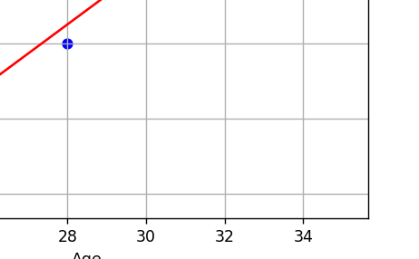
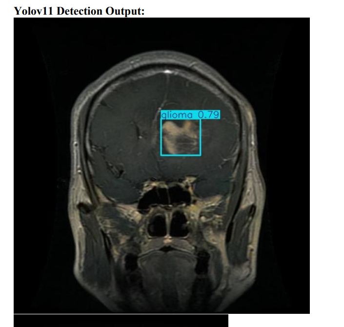

Traffic Violation Detection (YOLOv8)
An object detection project using YOLOv8 to detect traffic violations like not wearing helmets or signal breaking.

Prompt Enhancer
A web app that enhances user prompts for better AI responses. Built with Flask/FastAPI and deployed on Vercel.

ROR-BAcha-GPT (Chatbot)
A chatbot built with Gemini 1.5 Flash integrated via Flask API, designed for interactive Q&A conversations.

Titanic Data Analysis
Data analysis on the Titanic dataset, including preprocessing, visualization, and prediction of survival outcomes.

House Price Prediction
A machine learning model to predict house prices based on key features using regression techniques.

Salary Prediction Project
A regression-based project that predicts salaries based on features such as years of experience and education.

Brain Tumor Detection
A deep learning project for detecting brain tumors from MRI scans using CNN models.